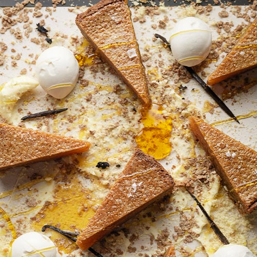

Treacle Tart with Mascarpone Ice Cream

Description
A Tom Kerridge recipe for treacle tart with an interesting ice cream option. Slightly unconventional ingredient choices make for a very tasty pudding. Full recipe sourced from here.
Ingredients
- For the filling:
- 25g butter
- 675g golden syrup
- 190g fresh brioche crumbs
- 75ml double cream
- 2 eggs and 1 egg yolk, lightly beaten
- 1/2 tsp salt
- extra sea salt to finish
- For the pastry:
- 250g softened butter
- 100g caster sugar
- 250g sifted plain flour, some extra for dusting also
- 190g bran flakes, blended into a powder
- pinch of salt
- 2 eggs, lightly beaten
- For the Mascarpone cream or ice cream:
- 250g Mascarpone
- 225g double cream
- 150ml milk
- 100g caster sugar
- 1/2 vanilla pod, split and scraped for seeds
- pinch of flaky salt
Steps
- For the Mascarpone cream, combine all the ingredients together in a bowl and mix until smooth. Either leave it as a cream for serving with the tart, or if you have an ice-cream machine at home you can churn the mixture in there, freeze it, and then take it out ~10 minutes before serving.
- Now the pastry. Cream the butter and sugar together. Fold in the flour, powdered bran flakes and salt. Add the eggs and mix to form a paste. Wrap in clingfilm and keep in the fridge for up to 1 day, or at least 1 hour.
- Preheat the oven to 170°C, gas mark 3.
- Dust your work surface with flour and then roll out the pastry dough to about the thickness of a £1 coin. Line a 24cm loose-bottomed tart tin with the pastry dough, leaving any excess to hang over the sides. Line the dough with some baking parchment and then fill the tart tin with some ceramic baking beans, uncooked rice, dried pulses, etc. Place the tin on a baking tray and cook for 20-25 minutes. Remove the parchment and the baking beans, or whatever else was used, and then return the pastry tin back to the oven for a further 10 minutes. The pastry shell of the tart should be cooked through and dried out. Leave to cool at this point.
- Lower the oven temperature to 160°C, gas mark 2.5, and now start work on the filling. Melt the butter in a saucepan over a medium heat until it starts to form and turn a nutty, golden brown. Whisk in the golden syrup which should stop the butter cooking further. Take the pan off the heat and pass the mixture through a fine sieve to remove any solids.
- Now mix the brioche crumbs in a bowl along with the butter and syrup mixture. Whisk in the cream, whole eggs, egg yolk and salt, leaving to cool for 10-15 minutes once combined. Pour the mixture into the tart case and then place the tin on a baking tray in the oven for 25 minutes.
- Reduce the oven temperature to 140°C, gas mark 1, and cook the tart for a further 30 minutes, until it is just set. As a guide, there should still be a slight wobble right in the centre of the tart.
- Remove from the oven and leave to cool. When ready to serve, sprinkle some sea salt flakes over the top of the tart, trim the edges of the pastry case, release the loose bottom of the tin, and then place the tart on a serving plate. Serve with scoops of the Mascarpone ice cream, or just dollops of the cream if you chose not to churn and freeze it.
- Enjoy eating!